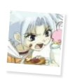
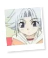

|
I N F O R M A T I O N » T H O U G H T S
Although he's quite smart, Mannen has the habit of acting rather rashly and without thinking. The result of his irrationality usually has him dangling at the end of a mayochuu (demon bug)'s tentacles, struggling to free himself. His thinking is the like. He would rather act than to sit down and think it through. This may not be the best way to think, but Mannen still has quite a bit to learn. He also likes to be independent, and to do things on his own rather than to take orders from his elders. Even in the case of Himeno, when she decides that they should do exactly as she says, Mannen immediately fires back that he's not a kid. I suppose in Mannen's eyes, a "kid" is someone who takes orders from others without question and miss out on all the fun. According to his thinking, the best way for him to prove himself worthy is by leading others. He does this rather harshly though, by bullying and bossing Hajime and Shin and making Shin cry more often than not.
From his own experiences, it seems to Mannen that adults are always bossing him around and making him take orders from them. Mannen doesn't realize the significance in that, since in tough situations, obeying orders and not wasting time arguing can help a lot. But since Mannen doesn't know any better, bossing and bullying is exactly what he does to Hajime and Shin. He isn't delibrately trying to be mean, he's simply trying to act like an adult. In some situations, Mannen does prove himself to be more mature than the rest of the young knights. When he unsuccessfully tries to stop Shin from crying and drawing attention, he stuffs a banana in Shin's mouth and edges him away before Shin could spill their identities. Although this may not be the best method of keeping quiet, Mannen does succeed in keeping their identities a secret. Since Shin has the habit of spilling unnecessary secrets, Mannen is often frustrated by him, being a "blabbermouth." ^-^ But honestly, Mannen cares for Shin and Hajime just the same, he simply refuses to show it. xD
Having been around mostly males from the beginning, Mannen hasn't experienced much direct love. Goh is always poking fun at him and calling him names, Kei would tell him he hates kids, and so forth. Even though deep inside, the knights all love Mannen, they don't show it directly. Himeno is the first person whom Mannen receives direct love from. In the situation where the mayochuu was in her room, Himeno was only too reliefed to find out that the kids were alright after the fight. Mannen, not used to this, feels incredibly awkward and can only utter a few confusing words while being tightly hugged by Himeno. He doesn't like to be protected, he was always taught to fend for himself and prove himself worthy. Part of Mannen's bratty behavior can be explained by this. As Mannen grows closer to Himeno, he was only too excited when Himeno came to him for help, asking him to tell her everything about Saihi. Mannen felt needed this time, but he's still reluctant to take Himeno to Leafunia. He only does so after being bribed by chocolate chip ice cream. ^_^
Mannen thinks like a kid most of the time, and he's head-strong more than anything else. He's not quite perfect, he acts rashly without thinking and bickers with everyone. His way of thinking has benefited the knights though, he's managed to keep Shin quiet in front of the enemy, although in a rather harsh way. XD
ainoyumeNET 2002 Trinity. All rights reserved. 
|
INFORMATION
/basics
/personality
/thoughts
/partners
/power
/voice
/quotations
|
MEDIA
/anime
/manga
/wallpapers
|
SITE RELATED
/updates
/links out
/link Ice Brat!
/credits
/contact me
|